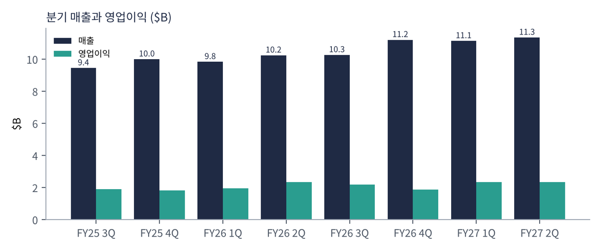
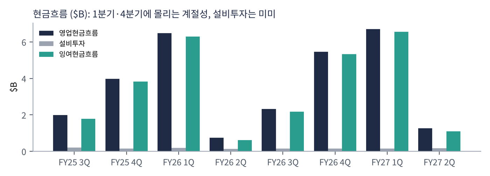
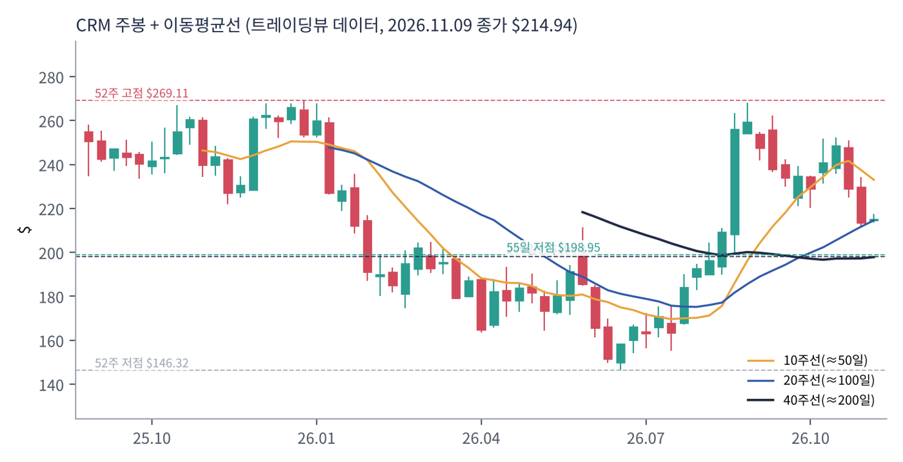
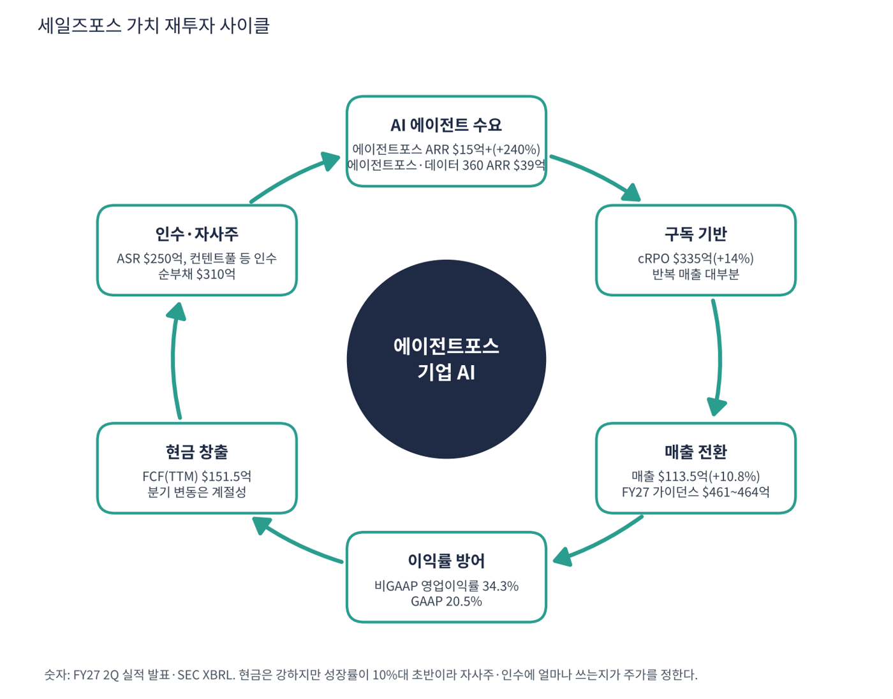

세일즈포스는 영업(CRM)·고객 서비스·마케팅·데이터 분석 소프트웨어를 클라우드로 파는 세계 최대 고객 관리 소프트웨어 회사다. 슬랙, 태블로, 머루소프트도 자사 서비스에 포함돼 있다. 최근에는 AI 에이전트 제품 에이전트포스(Agentforce)가 신성장 축이다. 회계연도는 1월 말 종료이며 FY27 2분기가 2026년 5~7월 분기다.
| 항목 | 내용 |
|---|---|
| 종목 | Salesforce, Inc. (CRM) · NYSE · 기업용 소프트웨어 · 본사 캘리포니아주 샌프란시스코 |
| 시가총액 | 약 $1,769억 · TTM PER 19.6배 · P/S 4.0배 · 11/9 종가 $214.94(+0.6%) |
| 최근 분기(FY27 2Q) | 매출 $113.45억(+10.8%), 영업이익 $23.31억(20.5%), 순이익 $35.26억(투자이익 포함), EPS $4.29, cRPO $335억(+14%) |
| AI | 에이전트포스 ARR $15억 이상(+240%), 에이전트포스·데이터 360 합산 ARR 약 $39억 |
| 가이던스 | FY27 매출 $461~464억, 3Q 매출 $114.2~115.0억, 비GAAP 영업이익률 34.3% |
| 주주환원 | $250억 규모 가속 자사주 매입(ASR) |
| 다음 실적 | FY27 3Q 실적: 2026년 12월 예정 |
| 직책 | 인물 | 역할·특징 |
|---|---|---|
| 회장 겸 CEO | 마크 베니오프 | 1999년 창업자. 클라우드 소프트웨어 모델을 개척하고 슬랙·태블로 등 대형 인수로 플랫폼을 키움 |
| 사장 겸 최고운영·재무책임자 | 로빈 워싱턴 | 재무와 운영을 함께 책임지며 이익률 관리와 자사주 매입 설명 |
경영 스타일: '인수로 확장하고 이익률로 투자자를 달랜다'. 성장률이 10%대로 내려오면서 행동주의 투자자 압박 이후 비GAAP 영업이익률을 30%대 중반까지 올렸고, 이번에 $250억 ASR을 시작했다. 한편 컨텐트풀 등 인수를 계속 진행해 자본배분의 일관성이 시험받고 있다.
고객 데이터를 모으는 데이터 클라우드 위에 AI 에이전트를 얹어 영업·서비스 업무를 자동화한다. 데이터 360 통합이 에이전트의 성능을 정한다.
인간 직원과 AI 에이전트가 함께 일하는 환경을 만드는 것이 회사가 내세우는 비전이다. 에이전트포스 ARR 증가가 그 증거로 제시된다.
| 분기 | 매출 | 영업이익 | 영업이익률 | 순이익 | 영업현금 | EPS | 특이 사항 |
|---|---|---|---|---|---|---|---|
| FY25 3Q | $94.4억 | $18.9억 | 20.0% | $15.3억 | $19.8억 | 1.58 | |
| FY25 4Q | $99.9억 | $18.2억 | 18.2% | $17.1억 | $39.7억 | 1.76 | |
| FY26 1Q | $98.3억 | $19.4억 | 19.8% | $15.4억 | $64.8억 | 1.59 | |
| FY26 2Q | $102억 | $23.3억 | 22.8% | $18.9억 | $7.4억 | 1.96 | |
| FY26 3Q | $103억 | $21.9억 | 21.3% | $20.9억 | $23.2억 | 2.19 | |
| FY26 4Q | $112억 | $18.7억 | 16.7% | $19.4억 | $54.6억 | 2.07 | |
| FY27 1Q | $111억 | $23.5억 | 21.1% | $21.1억 | $67.0억 | 2.42 | |
| FY27 2Q | $113억 | $23.3억 | 20.5% | $35.3억 | $12.7억 | 4.29 | 순이익에 투자이익 $26.1억(세전) 포함 |


흐름 요약: 매출은 $94.4억에서 $113.5억으로 20% 늘었지만 전년 동기 대비로는 10%대 초반(+10.8%)이다. 영업이익은 $18~23억에서 큰 변화가 없어 성장은 느리지만 이익은 안정적이다. 순이익은 FY27 2Q에 $35.3억으로 뛰었으나 $26.1억(세전)의 투자 평가이익이 섞여 있어 기초 체력과 다르다. 영업현금은 1분기·4분기에 몰리는 계절성이 커서(FY27 1Q $67.0억, 2Q $12.7억) 4분기 합계 $157.5억, 설비투자 $6.0억을 뺀 FCF $151.5억이 정직한 숫자다.
| 영역 | 내용 | 비고 |
|---|---|---|
| 영업·서비스 클라우드 | 영업 자동화(Sales), 고객 서비스(Service) | 핵심 반복 매출. 부문별 금액은 이번 수집에서 확인 못함 |
| 데이터·AI | 데이터 360, 에이전트포스, 인포매티카 연계 | 에이전트포스·데이터 360 ARR 약 $39억 |
| 플랫폼·기타 | 슬랙, 태블로, 머루소프트 | — |
| 마케팅·커머스 | 마케팅 자동화, 전자상거래 | — |
구독 계약 잔고(cRPO) $335억(+14%)이 매출 증가율(+10.8%)보다 높아 앞으로 몇 분기 매출이 가속될 여지가 있다. 사업부별 매출 금액은 이번 수집에서 확인하지 못했다. 에이전트포스 ARR $15억 이상은 전체 연 매출 약 $450억의 3% 수준으로, 아직 성장의 주력은 아니다.
세일즈포스가 가려는 곳은 모든 기업이 AI 에이전트(디지털 직원)를 고용해 쓰는 플랫폼이다. 데이터 360이 기업 데이터를 모으고 에이전트포스가 업무를 처리한다.
| 축 | 내용 |
|---|---|
| AI 에이전트 | ARR $15억+(+240%)로 가장 빠른 성장 축 |
| 데이터 | 인포매티카 등 인수로 데이터 통합 강화 |
| 주주환원 | $250억 ASR로 주당 이익 방어 |
| 인수 | 컨텐트풀 등 진행 중인 인수로 제품 확대 |

| 이동평균 | 값 | 종가 대비 | 해석 |
|---|---|---|---|
| 5일선 | $220.06 | -2.3% | |
| 20일선 | $235.20 | -8.6% | |
| 50일선 | $238.68 | -9.9% | |
| 100일선 | $209.79 | +2.5% | |
| 200일선 | $198.15 | +8.5% | $198, 이탈하면 장기 신호 약화 |
11/9 종가 $214.94는 52주 고점 $269.11의 80% 수준, 52주 저점 $146.32 대비 +47%다. 1·3·6·12개월 수익률은 -6%·+9%·+21%·-10%. 연중 고점 $269에서 10월 둘째 주 이후 $215까지 내려왔고 200일선($198) 위에 있다. 11월 첫 주 이후 반등했지만 20일·50일선 아래다.
트레이딩뷰 차트에서 사용자가 직접 그린 작도는 포함하지 않았고, 이동평균·돈키언 등 지표는 일봉 데이터로 직접 계산했다.
| 규칙 | 기준 | 현재 값 | 신호 |
|---|---|---|---|
| 장기 추세 필터 | 종가 vs 200일선 | $214.94 > $198.15 | 매수 |
| 중장기 교차 | 50일선 vs 200일선 | $238.68 > $198.15 | 매수 |
| 단기 교차 | 20일선 vs 50일선 | $235.20 < $238.68 | 매도 |
| 돈키언 채널 | 55일 고가 $268.27 / 저가 $198.95 | 중간값 $233.61 아래 | 매도 |
| 1개월 모멘텀 | 21거래일 수익률 | -6.2% (기준 $229.13) | 매도 |
| 3개월 모멘텀 | 63거래일 수익률 | +8.8% (기준 $197.47) | 매수 |
| 6개월 모멘텀 | 126거래일 수익률 | +21.1% (기준 $177.49) | 매수 |
| 12개월 모멘텀 | 252거래일 수익률 | -10.2% (기준 $239.27) | 매도 |
| 종합 (8개 평균) | +0.00 | 중립 |
해석: 점수 +0.00(중립)로 매수 4개, 매도 4개다. 200일선 위·50/200 매수와 3·6개월 모멘텀 매수가 있고 20/50 교차·돈키언 중간값·1개월·12개월은 매도다. 14일 ATR $9.06 (4.2%).
| 가격 | 무엇이 바뀌나 | 의미 |
|---|---|---|
| $198.15 | 200일선 이탈 시 장기 신호 매도 전환 | 점수 ±0.25 |
| $233.61 | 돈키언 중간값(55일 고·저점 평균) | 채널 신호 전환선 |
| $235.20 | 20일선 회복 시 단기 흐름 개선 | 단기 추세 신호 |
| $198.95 | 55일 저점 이탈 시 하락 추세 확정 | 손절 판단 기준 |
| 구분 | 가격 | 근거 |
|---|---|---|
| 저항 2 | $233.61 | 돈키언 중간값 |
| 저항 1 | $220.06 | 5일선 |
| 지지 1 | $209.79 | 100일선 |
| 지지 2 | $198.95 | 55일 저점 |
PEG는 일회성 효과로 왜곡돼 판단하지 않는다. FCF 11.7배로 값은 싸지만 성장 재가속 확인이 필요하다. $205~215 구간에서 계획 금액의 40%씩 두 번(총 80%)을 분할 매수하고 20일선 $235 회복 시 20%를 추가한다(평균 약 $208, 손절 $198 기준 손익비 1:2.7~1:6.1). 1차 $235(20일선·돈키언 중간값), 2차 $269(52주 고점 부근)에서 익절한다. 200일선 $198 종가 이탈이면 손절한다. 확인 신호는 12월 FY27 3Q 매출 $114.2~115.0억 달성, 에이전트포스 ARR 증가, ASR 진행 상황이다. 가격대는 내 시나리오이며 매매 권유가 아니다.
| 악재 요인 | 내용 | 강도 |
|---|---|---|
| 성장 둔화 | 매출 +10.8%, 가이던스 +11% 안팎. 대형 소프트웨어 중 낮은 편 | 중간 |
| AI의 좌석 대체 | AI가 사람 직원 수를 줄이면 좌석당 구독 모델이 약해진다는 우려 | 높음 |
| 일회성 이익 왜곡 | FY27 2Q 투자이익 $26.1억으로 EPS·PEG가 좋아 보임 | 중간 |
| 자본배분 | ASR $250억과 인수를 동시에 진행, 순부채 증가 | 중간 |
| 경쟁 | 마이크로소프트·서비스나우·오라클의 에이전트 경쟁 | 참고 |
| 티커 | 회사 | 시가총액 | PER(TTM) | PEG | P/S | EPS 성장(YoY) |
|---|---|---|---|---|---|---|
| CRM | 세일즈포스 | $177B | 19.6배 | 0.33 | 3.99배 | +59% |
| NOW | 서비스나우 | $107B | 74.0배 | – | 6.89배 | -16% |
| ORCL | 오라클 | $362B | 18.8배 | 0.38 | 4.85배 | +48% |
| MSFT | 마이크로소프트 | $4,049B | 28.5배 | 0.76 | 11.40배 | +36% |
| PLTR | 팔란티어 | $408B | 118.6배 | 0.48 | 56.64배 | +234% |
| CRWD | 크라우드스트라이크 | $234B | 적자 | – | 41.98배 | – |
EPS 성장률은 트레이딩뷰 TTM 값이며 CRM은 투자이익으로 부풀려져 있다. SAP·워크데이·어도비는 이번 수집에서 데이터를 확보하지 못했다.
비교 결론: 세일즈포스 PER 19.6배는 표의 대형 소프트웨어 중 오라클(18.8)과 비슷하고 서비스나우(74.1)·마이크로소프트(28.5)보다 낮다. '성장은 느리지만 현금이 두꺼운 값싼 소프트웨어'로 값이 매겨져 있으며, PEG 0.33은 일회성 효과로 신뢰할 수 없다.
세일즈포스는 현금이 풍부한 흑자 기업이다. 점검 포인트는 순부채가 늘어난 이유(ASR·인수)와 성장 둔화 시 배수 하락이다.
| 지표 | 값 | 계산·출처 | 해석 |
|---|---|---|---|
| 잉여현금흐름 (TTM) | +$151.5억 | SEC 합산 / 트레이딩뷰 일치 | FCF 마진 34.5%. 시총의 8.6% |
| 설비투자 (TTM) | $6.0억 | SEC 합산 | 매출의 1.4%로 거의 없음 |
| 현금 / 총부채 | $114.0억 / $423.8억 | 트레이딩뷰 최근 분기 | 총부채에 리스 부채 포함 가능. 순부채 $309.7억, 순부채/EBITDA 2.3배 |
| P/FCF | 11.7배 | 시총 $1,769억 ÷ $151.5억 | 소프트웨어 중 낮은 편 |
| 가정 P/S | 주가 | 현재 대비 | 의미 |
|---|---|---|---|
| 5.0배 (성장 재가속) | $269 | +25% | 에이전트포스 ARR 확대 확인 시 |
| 3.0배 (성장 한 자릿수 우려) | $161 | -25% | 52주 저점($146) 위 |
| 2.5배 (소프트웨어 약세장 배수) | $134 | -37% | 52주 저점($146) 하회 |
가정 P/S와 환산 주가는 내가 둔 시나리오다. TTM 매출 $439.4억, 시총 $1,769억(P/S 4.0배)을 기준으로 주가를 비례 환산했다.
| 기준 | 매출 | P/S | 비고 |
|---|---|---|---|
| 트레이딩뷰 표시값 | – | 4.0배 | — |
| 최근 4분기(TTM) | $439.4억 | 4.0배 | 시총 $1,769억 ÷ $439.4억 |
| FY27 가이던스 | $462.5억 | 3.8배 | 회사 가이던스 중간값 |
| 동종 소프트웨어 | – | – | 서비스나우 6.9, 오라클 4.9, 마이크로소프트 11.4, 팔란티어 56.6 (11/9) |
해석: P/S 4.0배는 이번 비교 소프트웨어 중 가장 낮다. 성장률(+10.8%)이 가장 낮은 만큼 정당하지만, 영업이익률 20%대 GAAP·34% 비GAAP로 질은 좋은 편이다.
| 지표 | 값 | 판정 |
|---|---|---|
| EBITDA (TTM, 트레이딩뷰) | $133.8억 | 흑자 |
| EBITDA 마진 | 30.4% | $133.8억 ÷ $439.4억 |
| TTM 영업이익률 | 19.9% | SEC 합산 $87.4억 ÷ $439.4억 |
| 순부채 / EBITDA | 2.3배 | 순부채 $309.7억(리스 포함 가능) |
| EV/EBITDA | 약 15.5배 | (시총 $1,769억 + $309.7억) ÷ $133.8억 |
| 방식 | PER | EPS 성장률 | PEG | 판정 |
|---|---|---|---|---|
| 트레이딩뷰 (TTM) | 19.6배 | +59.3%(투자이익 효과) | 0.33 | 적극 매수 (왜곡) |
| 기초 이익 기준 (내 추정) | 약 23배 (TTM EPS 약 $9.2) | +10% 가정 | 2.3 | 기준 초과 |
| 기초 이익 + 성장 15% 가정 | 약 23배 | +15% | 1.5 | 기준 초과 |
| P/FCF ÷ 매출 성장 (내 지표) | 11.7배 | +10.8% | 1.10 | 기준 초과 |
판정: 트레이딩뷰 PEG 0.33은 FY27 2Q의 $26.1억 투자이익이 EPS를 부풀린 결과라 신뢰하기 어렵다. 이익이 평년 수준일 때의 PER은 23배 안팎(내 추정, 투자이익 후 순이익 약 $20~25억 가정)이고 EPS가 10~15% 성장하면 PEG는 1.5~2.3으로 기준(1.0)을 넘는다. FCF 기준 대체 지표는 1.1이다. '싸 보이지만 일회성 효과를 걷어내면 평범한 가격'이라는 점에 주의해야 한다.

세일즈포스 사이클은 AI 에이전트 수요 → 구독 → 현금 → 자사주·인수다. 현금은 압도적이지만 성장 재가속이 확인되지 않았다.
| 고리 | 현재 숫자 | 고리 강도 | 약해지는 신호 |
|---|---|---|---|
| ① AI 에이전트 수요 | ARR $15억+(+240%) | 강함 | ARR 성장 둔화 |
| ② 구독 기반 | cRPO $335억(+14%) | 강함 | cRPO 성장 10% 아래 |
| ③ 매출 전환 | 매출 $113.5억(+10.8%) | 보통 | FY27 가이던스 하향 |
| ④ 이익률 | GAAP 20.5%, 비GAAP 34.3% | 강함 | 인수 비용 확대 |
| ⑤ 현금 창출 | FCF(TTM) $151.5억 | 강함 | 계절성 이상 하락 |
| ⑥ 자사주·인수 | ASR $250억, 순부채 $310억 | 주의 | 성장 인수 대신 환원만 반복 |
이 사이클의 구조: 현금·이익률은 강하고 성장이 보통이다. 약한 고리는 ③과 ⑥으로, 현금을 쌓는 데서 그치지 않고 성장에 효율적으로 재투자하는지가 관건이다.